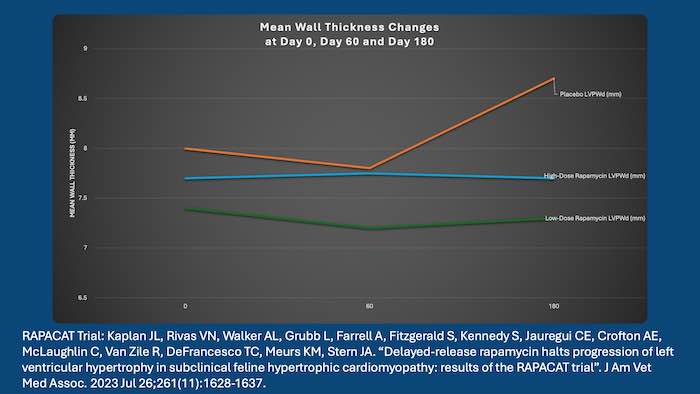

Should I give my cat with HCM Rapamycin (Felycin-CA1)?
❤️ Why all the hype? What should we be doing? Is Felycin the future of this disease?
Published on: May 29, 2025
Reviewed on: June 2, 2025
There has been a lot of talk recently about the use of rapamycin and its possible benefits in the disease known as hypertrophic cardiomyopathy (HCM). HCM is the most common cardiovascular disease in cats, with a reported prevalence of 14%. Many cats are diagnosed at the subclinical level, but some progress to severe diseases such as congestive heart failure, blood clots (thromboembolism) and sudden death. So there is a lot of interest in finding any preventative strategies that could help them avoid these outcomes.
Felycin-CA1
Felycin is the new trade name for rapamycin, given conditional approval from the FDA in March 2025. It is a new product from Trivium Vet. This is very exciting, but still there is very little information about this drugs actual effects and possible benefits. They sponsored the original RAPACAT trial which is currently the only source of information on use of this drug in cats with HCM.
What can Rapamycin do to help?
Rapamycin is an anti-fungal and immune system modulating drug with a complicated background. Originally it was isolated from soil on the island of Rapa Nui (Easter Island).
The theory of how it can help with heart muscle diseases is complex, but assumes that hypertrophy (thickening) of the heart muscle occurs due to something known as ‘oxidative stress’. This is damage occurring to heart muscle cells due to limits to the oxygen supply and the build up of waste products, and then restarting the blood (and oxygen) supply which causes damage (reperfusion injury). Typically this occurs after a heart attack (myocardial infarction) but also is likely occurring at the microscopic level over a longer period of time in HCM. Another important process is ‘autophagy’ – the controlled destruction of cells. Rapamycin effectively limits both of these processes, acting on a receptor known as mTOR and inhibiting its actions.
Where does this hype come from?
Studies in mice (1) have shown that mTOR activation does go a bit over the top in artificially induced situations of myocardial hypertrophy, reducing autophagy and that rapamycin appears to inhibit this. So the rapamycin should reduce the damage in the heart muscle, particularly when deprived of oxygen at times.
Enter the RAPACAT trial (2), a study designed to get the ball rolling on rapamycin as a preventative medication for HCM. They enrolled cats with subclinical HCM, and used the double blind randomised placebo-controlled clinical trial format to see what happened while giving 6 months of rapamycin.
They actually gave a low dose and a high dose as well as a placebo, and used the maximal wall thickness to judge whether things were progressing.
This graph they produced is the key takeaway – it looks pretty promising:
The graph shows an increase of wall thickness in the placebo controlled group, but a flat line of the high-dose group and an apparent reduction of thickness in the low-dose group. Looks amazing.
So is this a wonder drug we should all be reaching for? First a few cautionary points:
- They only had 43 cats in the trial, spread between 3 groups. This is a pretty tiny sample size when looking for subtle trends. Although sadly not uncommon with studies in veterinary medicine.
- 6 months of data is not very long in HCM timescales. We are often watching cats for years.
- They are looking for very subtle changes in the wall thickness, tenths of a millimetre.
- Most cardiologists are sceptical about whether wall thickness is particularly related to outcome or progression.
- Trying to accurately measure a cat’s myocardium and get an accurate, repeatable number for this is pretty hard, having done it hundreds of times myself.
- The error bars are pretty large, and we don’t see much individual data here.
So, currently most cardiologists are not getting particularly excited by this result. We want to see longer data and some more information about whether there are changes in significant outcome variables. After all, the thickness of the heart muscle is not the ultimate problem here. Lots of cats have thick heart muscle but no symptoms. We want to see actual improved survival or better quality of life.
Side Effects
Finally, is the drug side effect free? After all lots of nutritional supplements get used with much scantier data supporting them! In the RAPACAT trial, they do admit glucose intolerance – possibly leading to diabetes – as a known side effect in other species. And one of the 43 cats did get diabetes during the trial. This seems a bit concerning.
Summary
So in summary, most cardiologists are waiting for more data before recommending this drug. We appreciate that a diagnosis of HCM can cause a lot of emotional distress to cat parents. And you are rightfully keen to explore all potential options. However rapamycin seems to need a bit more convincing proof as yet. If you do go for it, make sure your cat is getting regular bloodwork particularly to watch for any signs of glucose intolerance developing.
Check out my video on the same topic if you want to know more:
What is Rapamycin (Felycin-CA1) - Can it help my cat with HCM?
References:
(1) Ma LL, Ma X, Kong FJ, Guo JJ, Shi HT, Zhu JB, Zou YZ, Ge JB. Mammalian target of rapamycin inhibition attenuates myocardial ischaemia-reperfusion injury in hypertrophic heart. J Cell Mol Med. 2018 Mar;22(3):1708-1719.
(2) Kaplan JL, Rivas VN, Walker AL, Grubb L, Farrell A, Fitzgerald S, Kennedy S, Jauregui CE, Crofton AE, McLaughlin C, Van Zile R, DeFrancesco TC, Meurs KM, Stern JA. Delayed-release rapamycin halts progression of left ventricular hypertrophy in subclinical feline hypertrophic cardiomyopathy: results of the RAPACAT trial. J Am Vet Med Assoc. 2023 Jul 26;261(11):1628-1637